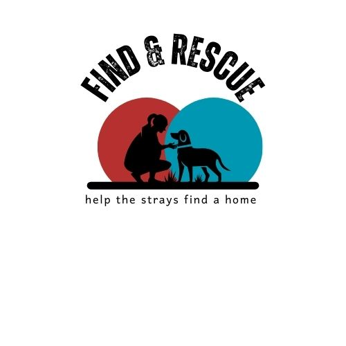
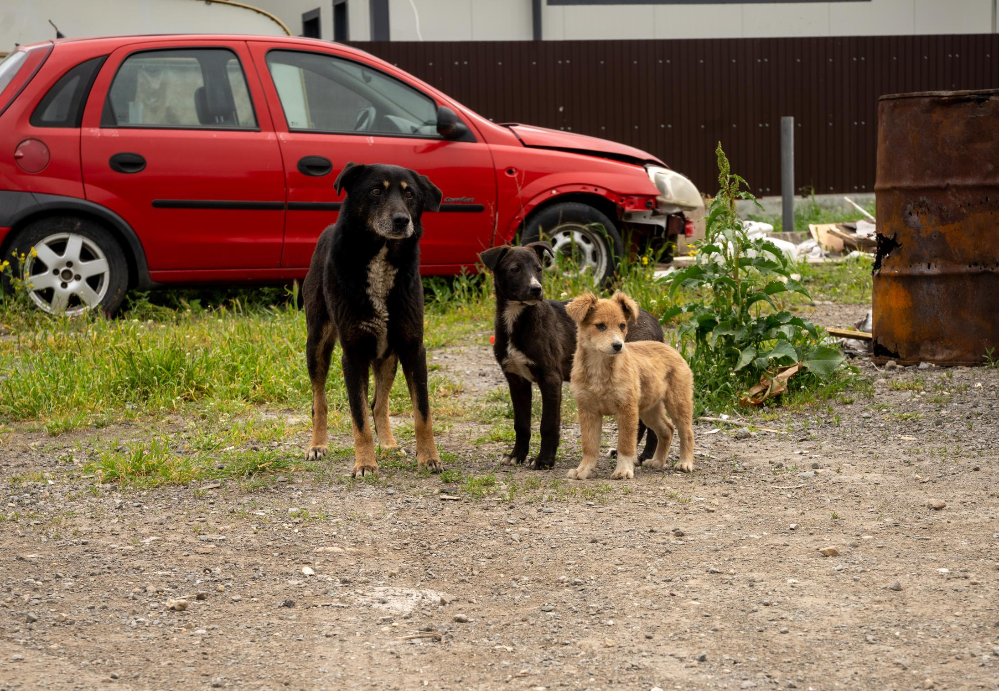

|  | Find & Rescue |
 | ||
Get to know us a little!Here at Rescue & find, we are dedicated to helping as many stray animals as we can and finding a loving home for them as well. Wether you've found a pet in need of rescue or are looking to adopt a companion, we offer a safe space for both. We believe every animal deserves warmth and a happy home, and we're here to make it happen. Join our mission to save lives and bring joy to both pets and their future families. |
||||
If you ever come across an stray in need or are willing to adopt one, reach out to us! |
||||